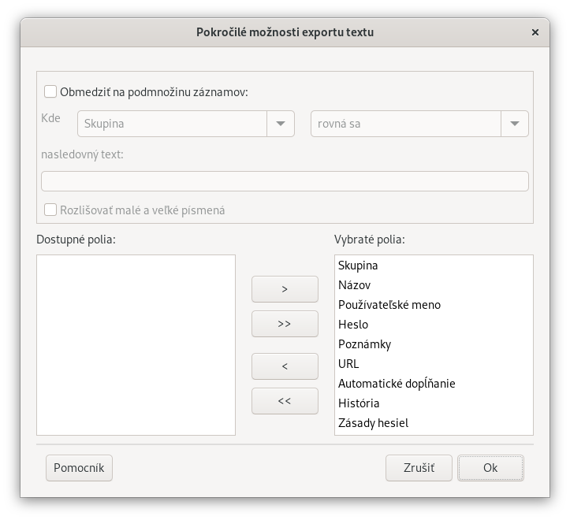

Upozornenie: Export citlivých informácií z databázy
Password Safe do textového súboru má vážne bezpečnostné dôsledky.
Táto operácia vytvorí nechránenú kópiu hesiel v databáze. Odstránenie tejto kópie po použití nestačí
a mali by sa vykonať ďalšie opatrenia na správne vymazanie údajov
(aj po vymazaní exportovaného súboru z disku dáta zostávajú na disku a dajú sa extrahovať).
Export citlivých údajov v podstate obchádza zabezpečenie ktoré poskytuje program Password Safe.
Poznámka: Funkcia exportu a importu do/z textových súborov bola vo verzii V3.06 zmenená. Táto stránka popisuje aktuálny formát.
Exportovaný text bude:
Začínať riadkom hlavičky ako prvým záznamom v textovom súbore
Použije oddeľovač na nahradenie znaku 'nový riadok' vo viacriadkovom poli Poznámky a bodku ('.'), ak je prítomná v poli Názov.
Predvolená hodnota je '»' [Alt+0187], ktorú je možné v prípade potreby prepísať.
Predpokladá sa, že importovaný text bude mať:
Riadok hlavičky ako prvý záznam v textovom súbore.
Oddeľovač na obnovenie znaku 'nový riadok' vo viacriadkovom poli Poznámky a bodky ('.'), ak je prítomná, v poli Názov.
Predvolená hodnota je '»' [Alt+0187], ktorú je možné v prípade potreby prepísať.>
Riadok hlavičky pre úplný export údajov v súčasnosti štandardne obsahuje nasledujúce polia (uložené sú v angličtine), oddelené tabulátorom.
Pri exporte údajov môžete použiť funkciu "Pokročilé možnosti exportu" na vylúčenie niektorých z týchto polí.
Táto možnosť vám tiež umožňuje určiť podmnožinu záznamov na export (filter), ako je znázornené nižšie.

Počas importu musí prvý riadok obsahovať "hlavičky stĺpcov", ktoré sa zhodujú presne s jedným z vyššie uvedených.
Ak sa akýkoľvek "hlavičkový stĺpec" opakuje, počas importu sa k záznamom pridajú iba údaje v poslednom z nich.
Ak sa "hlavičkový stĺpec" nezhoduje s jedným z vyššie uvedených, údaje v danom stĺpci sa počas importu ignorujú.
Polia musia byť oddelené oddeľovačom polí zadaným v dialógovom okne Importovať text.
Poznámky:
Ak chcete importovať akékoľvek údaje do Password Safe, polia Názov a Heslo musia byť prítomné a nesmú byť prázdne.
Poradie stĺpcov v riadku hlavičky nie je obmedzené. Password Safe použije daný riadok na správne pridanie údajov do správneho poľa.
Formáty údajov
Hlavička stĺpca/Pole
Poznámka
Group/Title
Ak sú prítomné, skupiny sú oddelené bodkami ('.').
Pole Názov nemôže byť prázdne, nevyplnené ani obsahovať oddeľovací znak.
Pole Poznámky by malo byť uzavreté v úvodzovkách ("takto").
Pole Poznámky by nemalo obsahovať oddeľovač polí, pretože pri importe sa preloží na nový riadok.
Poznámky:1
Časové polia môžu mať jeden z nasledujúcich 7 formátov:
1.
yyyy/MM/dd hh:mm:ss
napr. 2007/01/26 19:31:25
2.
ddd MMM dd hh:mm:ss yyyy
napr. Fri Jan 26 19:31:25 2007
3.
yyyy-MM-ddThh:mm:ss
napr. 2007-01-26T19:31:25
4.
yyyy-MM-ddThh:mm:ssZ (XML only)
napr. 2007-01-26T19:31:25Z
5.
yyyy-MM-ddThh:mm:ss±hh:mm (XML only)
napr. 2007-01-26T19:31:25+01:00
6.
0
Ponechať pole nenastavené
7.
now
Použiť čas operácie importu
kde:
yyyy
Celý rok. Hodnota je medzi rokmi 1970 a 2038.
MM
Mesiac; napr. 01 = január, 02 = február atď.
dd
Deň v mesiaci
MMM
Skrátený tvar mesiaca; napr. Jan = január, Feb = február atď.
ddd
Skrátený tvar dňa v týždni; napr. Mon = pondelok, Tue = utorok atď.
hh
Hodina pri použití 24-hodinového formátu.
mm
Minúty
ss
Sekundy
Poznámka: Formát '2' je výstupom funkcie ANSI C 'asctime' a formát
'3' zodpovedá norme ISO 8601.
Poznámky:2
História hesiel je v exportovanom zázname zobrazená ako textové pole
ktoré obsahuje hlavičku, za ktorou nasleduje požadovaný počet položiek starých hesiel:
Hlavička histórie hesiel:
1 hexadecimálna číslica - stav uloženia PWH pre túto položku (0 = nie; 1 = áno)
2 hexadecimálne číslice - maximálny počet položiek v tomto zázname
2 hexadecimálne číslice - počet aktuálne uložených položiek
Každá položka histórie hesiel:
8 hexadecimálnych číslic - čas nastavenia starého hesla
4 hexadecimálne číslice - dĺžka starého hesla
reťazec znakov - staré heslo
Poznámky:3
Zásady hesiel sú v exportovanom zázname reprezentované ako textové pole 'ffffnnnllluuudddssss' v hexadecimálnom formáte, napr. 'F000010004002005003'.
V tomto formáte je obsiahnutých 6 hexadecimálnych hodnôt. Prvá hodnota má 4 číslice, všetky ostatné 3.